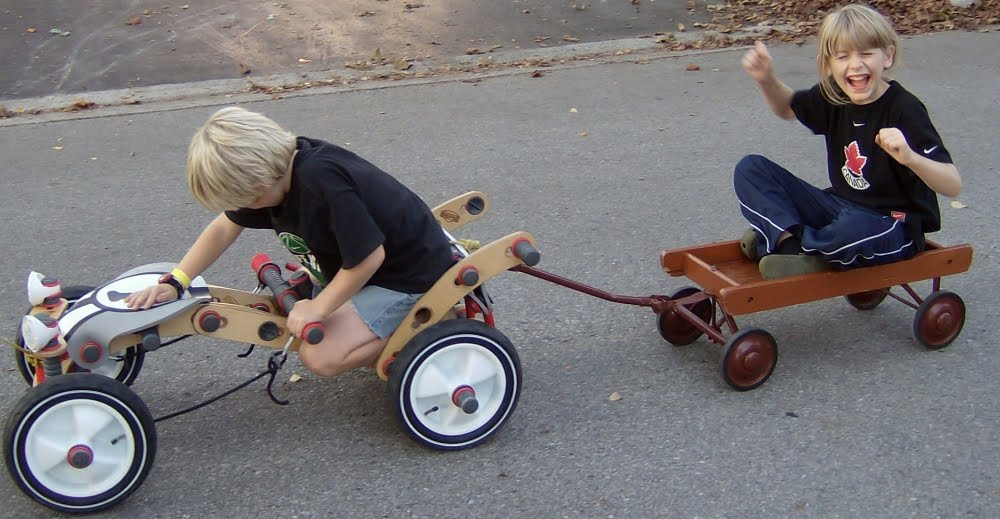

|
Reflecting charm and intelligence of children Latvian “ne vardarība un kautiņi, bet gandarību un labvēlību” (not oppressive actions and fights, but work for goodness and goodwill of others) Estonian Success in children’s films by Joonisfilm because “respect for children” “free of violence and smart-ass kids” “never belittle child viewers” “in many cases, the narration is minimal, thereby allowing the images and the imaginations of the children to fill in the gaps.” <estonian animation> [Joonisfilm most successful children’ films, "Tom and Fluffy", "Lotte", "Ladybird’s Christmas", were well received in Germany, France, Italy, China and Australia. All 3 are anthropomorphic tales, involving dogs and insects. The stories were well realized and simple.] Japanese “adults should not impose their own wisdom of the world on their children.” “... children’s souls are the inheritors of historical memory of previous generations.” <Hayao Miyazaki> The old language of the Baltic, and its ability to tell children’s stories As with Latvian language, the Estonian language has origins from 5000 years. The landscape is bound with the language of the people. “given the age of both the language and the land, there is a sense of stability or permanence found in Estonia that appears to be absent in, for example North America, where the land is massive, relatively young, and continually abused.” <estonian animation> “This isn’t to say that (estonian animators) are naive and childlike, but rather that their way of perceiving the world, which is closely bound with a language that is spoken by so few, is different from ‘our’ (western perspective).” <estonian animation> Specifically, Estonians (and Baltics) use language rooted in landscape, centuries old, while Westerners have “heavy case of historical amnesia”, “ease with Orwellian double-speak”, “are perhaps not fully appreciating, let alone understanding, the refreshing, unfiltered nature of Estonian language and thought.” <estonian animation> [Robinson, Chris. Estonian Animation: Between Genius and Utter Illiteracy. 2003, 2006. Ottawa Canada. In conjunction with Estonian Animation Association.]  Latvian principles in communicating to children How things work Latvian stories that describe how things work, are done by showing that nature’s balance and interaction work the same, whether you are a person, plant, star, or anything else. The stories describe all elements of nature, as plants, clouds, animals, rocks and of course, people, anthropomorphically. They are all in a sense people, going about their daily business. Grammatically they are referred to in the diminutive (iņš, iņa, ītis, īte suffix). This emphasizes that the being, be it a person, dog, grass blade or chair, has a shining light inside itself, and therefore must be handled with care. Often the plants and animals directly tell children - listeners - how and why they are doing what they are doing, how they are feeling, and of course inviting the listener to their “home” or “event”. “Nature” and all its elements often discuss with wonder and interest the “cilvēks” (people). “People” are grown ups, and “nature” joins children as “friends” to try to figure them out. Children are acutely aware that for the most part “people” are not happy. Nature’s elements explain to children that the elements of nature, themselves, are not concerned (neuztraucamies) , are satisfied (apmierināti) and are not sad (nebēdās); while “people” (cilvēks) are upset (uztraucās), unsatisfied (neapmierināti) and sad (bēdigi) because they are no longer “friends” (in balance) with “nature”. “Nature” would then remind children they can always “visit” and be “friends” with “nature”, and often give an example of how to do so. For example, an old oak tree would be delighted if a child came to visit with that acorn it just dropped the other day. i.e. friendship comes from giving... examples of animism and anthropomorphism in nature>>
How to negotiate difficult situations NOTES by Anda Vitols 2008
Home |